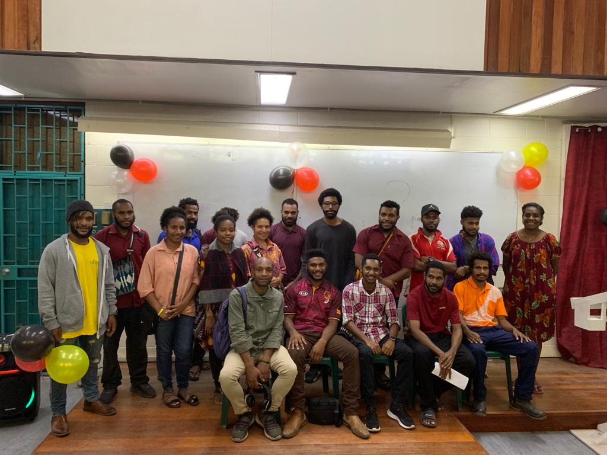

The department of Mathematics, Statistics and Computer Science is under the School of Natural and physical Science in the University of Papua New Guinea. The Bachelor of Science in Computer Science Statistics Program provides a strong technical foundation for students interested in persuing graduate-level studies in computer science. In addition to the core cirriculum, the program covers the fundimentals of network, programming, software engineering and statistics. The Bacholor of Science in Mathematics, Statistics and Computer Science is a three-year degree programme which provides a strong foundation in Matheatics, Statistics and Programming. Students who graduate with this degree can apply for careers in the IT scctor, particularly in Programming and Software Engineering. Some of the main area of employment graduates with degreee in Mathematics, Statistics and Computer Science enter are; finance,industry, computing(including operational reseach),Management,administration, statictics, teaching(schools and collages) and post graduate study. and many more. The second year students of mathematics, statistics and computer science study four major courses in the first semister at UPNG. The link here shows more information about the courses the MSCS division offers Click the link . These four courses are; Information Technology Concepts, Calculus 1, Discrete Mathematics and Linear Algebra. There are only six girls taking MSCS and the majority of the year two students are all boys.
Below is a picture of the MSCS year two students.
The table below shows the four couses studied by the year two students.
| School | Division | Course Name | Course Number |
|---|---|---|---|
| School of Natural and Physical Science | Mathematics, Statistics and Computer Science | Information Technology Concepts | 1.20821 |
| School of Natural and Physical Science | Mathematics, Statistics and Computer Science | Calculus 1 | 1.20801 |
| School of Natural and Physical Science | Mathematics, Statistics and Computer Science | Discrete Mathematics | 1.20803 |
| School of Natural and Physical Science | Mathematics, Statistics and Computer Science | Linear Algebra | 1.20804 |
Below is the names of the Lecturers of MSCS teaching year two students in semister 1 and their details.
ITC Lecturer
Email: emmanuel.budibudi@upng.ac.pg
Calculus 1 Lecturer
Email: jwsilas@upng.ac.pg
Discrete Mathematics Lecturer
Email: elina.lakamanga@upng.ac.pg
Linear Algebra Lecturer
Email: rabulaka@upng.ac.pg